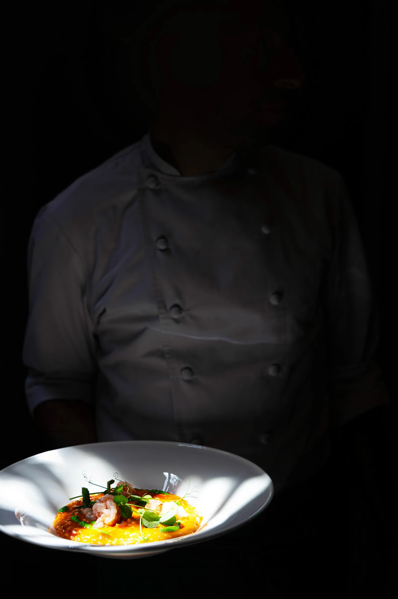

Fine Dining Restaurant

Click to preview live siteEmber & Ash is a five-page brand website for a fictional fine-dining restaurant in Portland, Oregon's Richmond neighborhood. The restaurant concept centers on open-fire cooking — a "hearth-to-table" philosophy that treats flame as a collaborator rather than a tool. The tagline — "Fire. Smoke. Everything in Between." — telegraphs the elemental, stripped-back ethos.
The site includes a full-viewport hero with parallax, a categorized menu with click-to-expand item modals showing wine and cocktail pairings, a story page with chef bio and gallery, a reservation form, and a location page with hours and contact details. The design is deliberately dark, warm, and textural — deep brown backgrounds, amber accents, serif typography — to evoke the gravity and intimacy of dining by an open fire.
The challenge: how do you translate the visceral sensory experience of a wood-fired hearth restaurant — the crackle of logs, the smell of smoke, the dim amber light — into a digital interface that feels equally intentional and atmospheric?
A high-end independent restaurant needs to convey a strong, cohesive identity before a guest ever walks through the door. Generic template sites fail to communicate the atmosphere, philosophy, and craft that differentiate a premier dining experience. This site was built to perform the brand rather than merely describe it — using a moody dark palette, subtle parallax motion, scroll-reveal animations, and image overlays with mix-blend-mode to consistently tint photography with the brand's amber warmth.
The primary audience is food-minded diners in Portland — locals and visitors — who seek intentional, chef-driven dining experiences. These are people who value farm-to-table sourcing and seasonal cooking, appreciate craft cocktails and wine pairings, and are comfortable spending $60+ per person for a special occasion.
The persona: someone who follows Bon Appétit and Food & Wine, who picks restaurants based on design aesthetic and stated philosophy as much as the menu, and who browses on mobile during a commute and later books a birthday dinner on desktop. The site also serves the restaurant's own staff as a digital storefront that reduces incoming phone calls by handling reservations and inquiries self-serve.